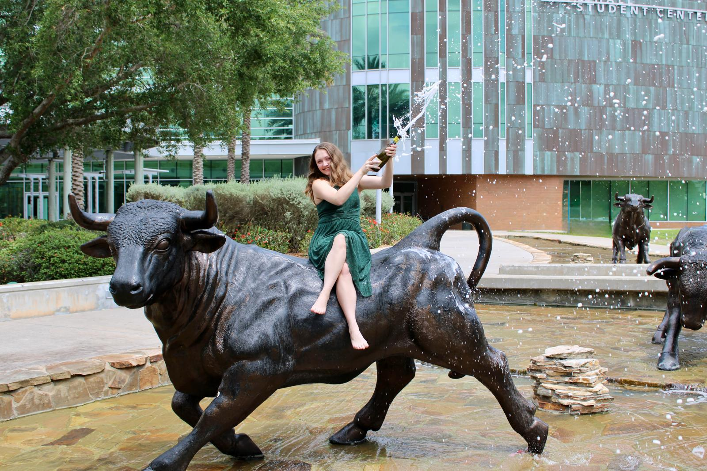
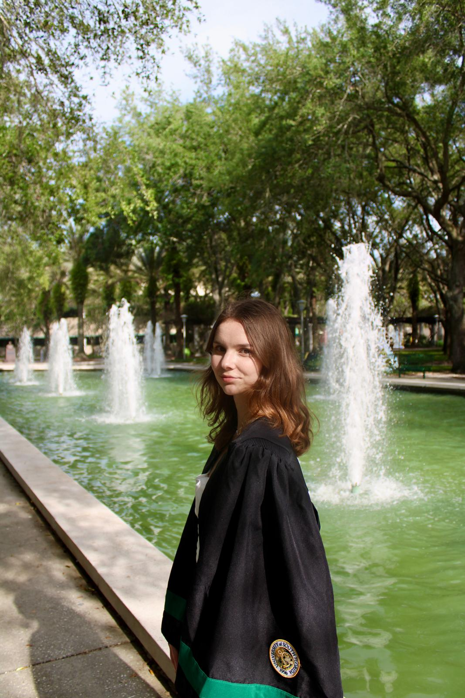
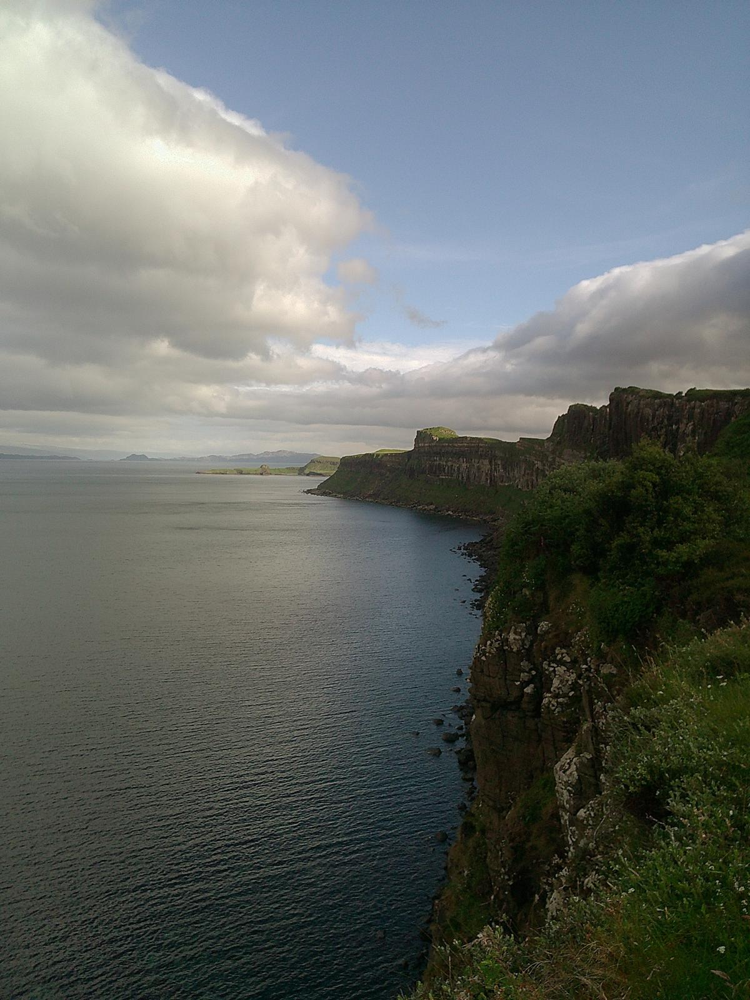

01
Photography
Digital and film — moments held in light, grain, and patience.








Vol. 01 — Selected Works
A curated collection spanning photography, videography, and written work — from graduations and landscapes to editorial film and journalism.
Digital and film — moments held in light, grain, and patience.


